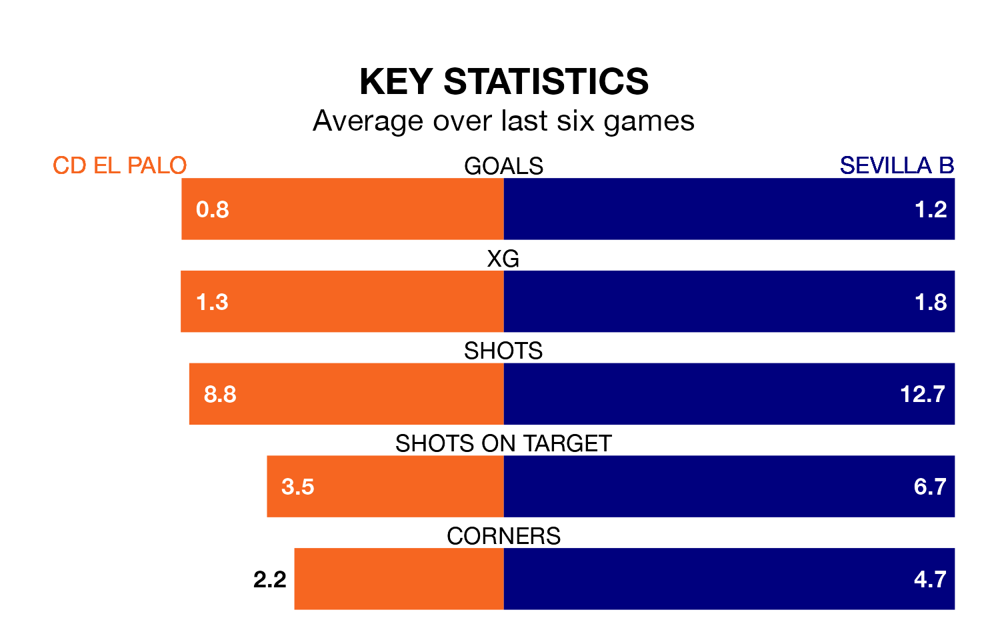

Relegation candidates CD El Palo face a challenge against high-flying Sevilla B at the Estadio San Ignacio on Sunday.
CD El Palo are 16th in the Segunda División RFEF Group 4 table, and have picked up eight wins and 11 draws in their 33 games to date.
Sevilla B, meanwhile, are top of the standings with 65 points, having won 18 and drawn 11.
With 51 goals in 33 games so far this season, Sevilla B are the league's highest scorers with 1.5 goals per game. And they are conceding fewer than average, letting in 19 goals at a rate of 0.6 per game.
El Palo, meanwhile, are below average scorers, with 0.8 goals per game, compared to a league average of 1.0. They have conceded 1.1 goals per game.
El Palo are in mixed form in the Segunda División RFEF Group 4, with two wins and four draws from their last six games.
With three wins and two draws over that period, the away team's form is slightly better – they have taken 11 points from 18, compared to the hosts' 10.
El Palo's last match was on April 28, a 0-0 draw against CD San Roque de Lepe.
Sevilla B drew 1-1 with UCAM Murcia CF last time out, also on April 28, with Manu Bueno on the scoresheet.
Updated: 10:44 (UTC), 30/04/24